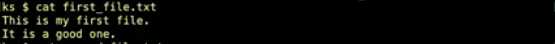
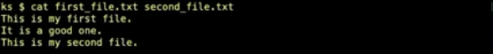
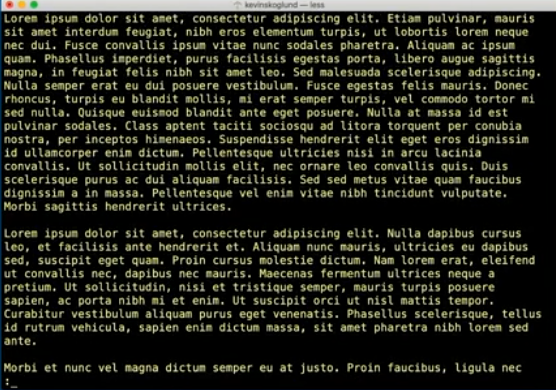
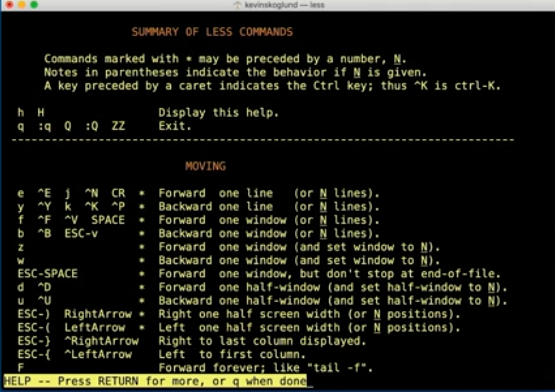

to read files
- cat
- concatenates
- more
- paginates output
less - less is like more but includes
- backwards scrolling and better memory use
cat
conatenating outputs the file
cat another file
cat both files together
this will allow us to merge files together and output them
less
for long files use less
use "space" or "f" key to move forward
"b" will bring you back a page
"h" will bring up a help menu
